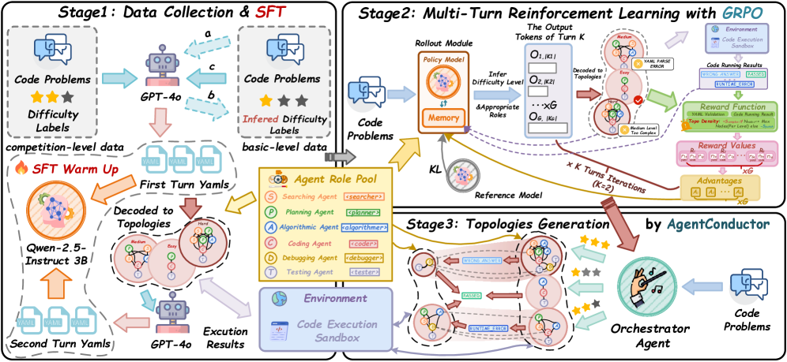

AgentConductor
trained orchestrator · competition code
Actionπθ 每个 turn 输出 variable-length YAML DAG：roles、edges、execution order。
Learning先 SFT 学会合法 topology，再用 GRPO 联合优化正确率、有效性与 density。
Online adaptation执行 G(k)，读入 roles/code feedback z(k)，下一 turn 生成 G(k+1)。
EvaluationAPPS、LiveCodeBench v4、CodeContests、HumanEval、MBPP；pass@1。